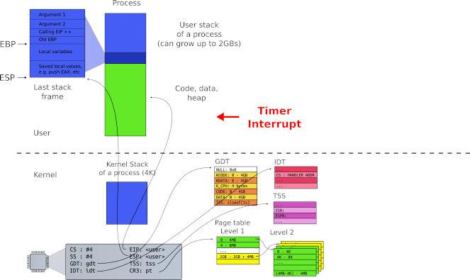
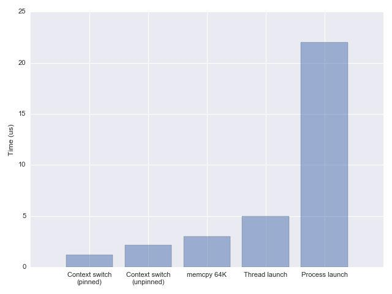
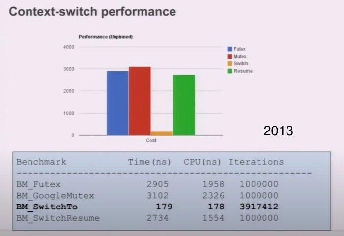
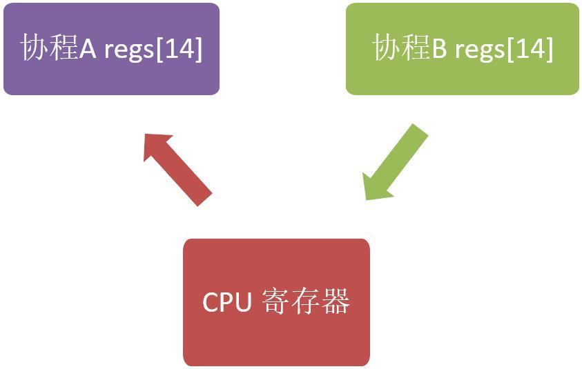
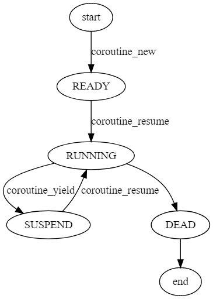

协程
Table of Contents
什么是协程
可以简单的认为：协程就是 用户态的线程 ，但是 上下文切换 的时机是靠 调用方 自身去控制的。同时，协程和 用户态线程 非常接近，用户态线程之间的切换不需要陷入内核，但部分操作系统中用户态线程的切换需要内核态线程的辅助
下面是一个简单的例子：
void A() { cout << 1 << " "; cout << 2 << " "; cout << 3 << " "; } void B() { cout << "x" << " "; cout << "y" << " "; cout << "z" << " "; } int main(void) { A(); B(); }
在单线程中，上述函数的输出为：
1 2 3 x y z
如果用 libco 库将上面程序改造一下：
void A() { cout << 1 << " "; cout << 2 << " "; co_yield_ct(); // 切出到主协程 cout << 3 << " "; } void B() { cout << "x" << " "; co_yield_ct(); // 切出到主协程 cout << "y" << " "; cout << "z" << " "; } int main(void) { ... // 主协程 co_resume(A); // 启动协程 A // 1, 2 hang co_resume(B); // 启动协程 B // x hang co_resume(A); // 从协程 A 切出处继续执行 // 3 finish co_resume(B); // 从协程 B 切出处继续执行 // y z finish }
同样在单线程中，改造后的程序输出如下：
1 2 x 3 y z
可以看出，切出操作是由 co_yield_ct() 函数实现的，而协程的启动和恢复是由 co_resume() 实现的。函数 A() 和 B() 并不是一个执行完才执行另一个，而是产生了 “交叉执行“ 的效果，这就是通过协程实现的！
协程的优点
线程挺好的，为什么需要协程呢？ 因为有些时候我们在执行一些操作（尤其是IO操作）时，不希望去做“创建一个新的线程”这种重量级的操作来异步处理
而是希望：*在当前线程执行中，暂时切换到其他任务中执行，同时在IO真正准备好了之后，再切换回来继续执行！* 相比于多开一个线程来操作，使用协程的好处：
- 减少了线程的重复高频创建
- 尽量避免线程的阻塞
- 提升代码的可维护与可理解性
同时，下面是一些协程的特点：
协程可以 主动让出 CPU 时间片
注意：不是当前线程让出 CPU 时间片，而是线程内的某个协程让出时间片供同线程内其他协程运行
- 协程可以 恢复 CPU 上下文 ，当另一个协程继续执行时，其需要恢复 CPU 上下文环境
- 协程有个 管理者 ，管理者可以选择一个协程来运行，其他协程要么 阻塞 ，要么 ready ，或者 died
- 运行中的协程将 占有 当前线程的所有计算资源
- 协程天生有栈属性，而且是 lock free
线程上下文
下图中展示了线程在运行过程 CPU 需要的一些信息（CPU Context，CPU 上下文），比如 通用寄存器 、 栈信息（EBP/ESP） 等

进程/线程切换时需要保存与恢复这些信息，而进程/内核态线程切换的时候需要与OS内核进行交互，保存/读取 CPU 上下文信息
线程时间消耗分析
内核态 Kernel 的一些数据是共享的，读写时需要 同步 机制，所以操作一旦陷入内核态就会消耗更多的时间。进程需要与操作系统中所有其他进程进行资源争抢，且操作系统中资源的锁是全局的；线程之间的数据一般在进程内共享，所以线程间资源共享相比如进程而言要轻一些
虽然很多操作系统（比如 Linux）进程与线程区别不是非常明显，但线程还是比进程要轻
线程的切换（Context Switch）相比于其他操作而言并不是非常耗时，如下图所示（2018年）：

Linux 2.6 之后 Linux 多线程的性能提高了很多，大部分场景下线程切换耗时在 2us 左右，下面是 Linux 下线程切换耗时统计（2013 年）：

正常情况下线程可用的 CPU 时间片都在数十毫秒级别，而线程切换占总耗时的千分之几以内 协程的使用可以将这个损耗进一步降低（主要是去除了其他操作，比如 futex 等）
线程内存消耗分析
不是所有编程语言或者系统都支持一次创建很多线程
例如，在 x32 系统中即使使用了虚内存空间，因为进程能访问的虚内存空间大概是 3GB 所以单进程最多创建 300 多条线程（假设系统为每条线程分配 10M 栈空间） 太多线程甚至还伴随着由于线程切换而触发缺页中断的风险
如果创建很多线程（比如 x64 系统下创建 1 万个线程），不考虑优先级且假设 CPU 有 10 个核心，那么每个线程每秒有 1ms 的时间片，整个业务的耗时大概是： (n-1) * 1 + n * 0.001(n-1) * 1 + n * 0.001 秒， 其中 n 是线程在处理业务的过程中被调度的次数
如果大量线程之间存在资源竞争，那么系统行为将难以预测 所以在有限的资源下创建大量线程是极其不合理的，服务线程的个数和 CPU 核心数应该在一个合理的比例内
在默认情况下，Linux 系统给每条线程分配的栈空间最大是 6～8MB，这个大小是上限，也是虚内存空间，并不是每条线程真实的栈使用情况。线程真实栈内存使用会随着线程执行而变化，如果线程只使用了少量局部变量，那么真实线程栈可能只有几十个字节的大小；系统在维护线程时需要分配额外的空间，所以线程数的增加还是会提高内存资源的消耗
通过上面的分析我们可以知道： 如果业务处理时间远小于 IO 耗时，线程切换非常频繁，那么使用协程是不错的选择 并且，协程的优势并不仅仅是减少线程之间切换，从编程的角度来看，协程的引入简化了异步编程； 协程为一些异步编程提供了无锁的解决方案，即协程可以用同步编程的方式实现异步编程才能实现的功能
保存上下文
很多地方把协程称为 Subroutine
Subroutine是什么？就是函数 上古时期的计算机科学家们早就给出了概念：Coroutine就是可以中断并恢复执行的Subroutine
Coroutine与Subroutine 区别仅有一个就是：Coroutine可以 中断 并 恢复 ，对应的操作就是 yield/resume
这样看来Subroutine不过是Coroutine的一个子集罢了，也就是说把协程当做一个特殊的函数调用
中断并恢复
既然可以把 Coroutine 当做一个特殊的函数调用，那么如何像切换函数一样去切换Coroutine呢？
难点在于：除了像函数一样切换出去，还要在 某种条件满足的时候 切换回来
通常的做法是：在协程内部存储自身的上下文，并在需要切换的时候把上下文切换 上下文其实本质上就是寄存器，所以保存上下文实际上就是把寄存器的值保存下来
相对应的，有下面几种方法：
- 使用 setjmp/longjmp
使用 汇编 保存寄存器中的值
libco就使用了这种方法
- 使用 ucontext.h 这个封装好的库也可以完成上下文的相关工作
使用setjmp/longjmp
需要注意的是：setjmp/longjmp 一般不能作为协程实现的底层机制，因为 setjmp/longjmp 对栈信息的支持有限
下面代码模拟了单线程并发执行两个 while(true){…} 函数：
#include <cstdlib> #include <cstdio> #include <setjmp.h> int max_iteration = 9; int iter; jmp_buf Main; jmp_buf PointPing; jmp_buf PointPong; void Ping() { if (setjmp(PointPing) == 0) longjmp(Main, 1); // 可以理解为重置，reset the world while (1) { printf("%3d : Ping-", iter); if (setjmp(PointPing) == 0) longjmp(PointPong, 1); } } void Pong() { if (setjmp(PointPong) == 0) longjmp(Main, 1); while (1) { printf("Pong\n"); iter++; if (iter > max_iteration) exit(0); if (setjmp(PointPong) == 0) longjmp(PointPing, 1); } } int main(int argc, char* argv[]) { iter = 1; if (setjmp(Main) == 0) Ping(); if (setjmp(Main) == 0) Pong(); longjmp(PointPing, 1); }
- 首先，定义了三个保存调用栈的节点：
- jmp_buf Main
- jmp_buf PointPing
- jmp_buf PointPong
- main 函数中首先创建（启动）了两个函数：Ping、Pong，在使用 longjmp(PointPing, 1); 之后，PointPing 不再是0，从而启动了 Ping 协程。此后，函数 Ping 和 函数 Pong 在 while (1) 中交替执行，而不再返回 main 函数中
- 最后，当 iter > max_iteration 时，调用 exit(0) 退出
$ g++ -std=c++11 setjmp_demo.cc -o setjmp_demo $ ./setjmp_demo 1 : Ping-Pong 2 : Ping-Pong 3 : Ping-Pong 4 : Ping-Pong 5 : Ping-Pong 6 : Ping-Pong 7 : Ping-Pong 8 : Ping-Pong 9 : Ping-Pong
虽然上面实现了比较简单的函数切换，但是实际上无法通过 setjmp.h库获取到真正的上下文信息 如果想要真正获取到上下文信息，可以使用 ucontext.h 库
使用ucontext
实际上，ucontext lib 已经不推荐使用了，但依旧是不错的协程入门资料
其他底层协程库实现可以查看：
- Boost.Context
- tbox
linux 系统一般都存在 ucontext 这个 C语言库，这个库主要用于： 操控当前线程下的 CPU 上下文 。和 setjmp/longjmp 不同，ucontext 直接提供了设置函数运行时栈的方式（makecontext），避免不同函数栈空间的重叠
ucontext 只操作与当前线程相关的 CPU 上下文，所以下文中涉及 ucontext 的上下文均指当前线程的上下文 一般CPU 有多个核心，一个线程在某一时刻只能使用其中一个，所以 ucontext 只涉及一个与当前线程相关的 CPU 核心
ucontext.h 头文件中定义了 ucontext_t 这个结构体，这个结构体中至少包含以下成员：
ucontext_t *uc_link // next context sigset_t uc_sigmask // 阻塞信号阻塞 stack_t uc_stack // 当前上下文所使用的栈 mcontext_t uc_mcontext // 实际保存 CPU 上下文的变量，这个变量与平台&机器相关，最好不要访问这个变量
可移植的程序最好不要读取与修改 ucontext_t 中的 uc_mcontext，因为不同平台下 uc_mcontext 的实现是不同的
同时，ucontext.h 头文件中定义了四个函数，下面分别介绍：
int getcontext(ucontext_t *); // 获得当前 CPU 上下文 int setcontext(const ucontext_t *);// 重置当前 CPU 上下文 void makecontext(ucontext_t *, (void *)(), int, ...); // 修改上下文信息，比如设置栈指针 int swapcontext(ucontext_t *, const ucontext_t *);
- getcontext
#include <ucontext.h> int getcontext(ucontext_t *ucp);
getcontext 函数使用当前 CPU 上下文初始化 ucp 所指向的结构体，初始化的内容包括：
- CPU 寄存器
- 信号 mask
- 当前线程所使用的栈空间
返回值： 成功返回 0，失败返回 -1
- setcontext
和 getcontext 函数类似，setcontext 函数用于：设置CPU 寄存器、信号 mask 和当前线程所使用的栈空间
#include <ucontext.h> int setcontext(ucontext_t *ucp);
需要特别注意的是：
- 如果函数 setcontext 执行成功，那么调用 setcontext 的函数将 不会返回 ，因为当前 CPU 的上下文已经交给其他函数或者过程了，当前函数完全放弃了 对 CPU 的“所有权”。
getcontext 和 setcontext 的应用： 当信号处理函数需要执行的时候，当前线程的上下文需要保存起来，随后进入信号处理阶段
- makecontext
修改由 getcontext 创建的上下文 ucp
#include <ucontext.h> void makecontext(ucontext_t *ucp, (void *func)(), int argc, ...);
如果 ucp 指向的上下文由 swapcontext 或 setcontext 恢复，那么当前线程将 执行 传递给 makecontext 的函数 func(…)
执行 makecontext 后需要为新上下文分配一个栈空间
如果不创建，那么新函数func执行时会使用旧上下文的栈，而这个栈可能已经不存在了
- 同时，argc 必须和 func 中整型参数的个数相等
- swapcontext
swapcontext 将当前上下文信息保存到 oucp 中并使用 ucp 重置 CPU 上下文。返回值：
- 成功则返回 0
- 失败返回 -1 并置 errno
#include <ucontext.h> int swapcontext(ucontext_t *oucp, const ucontext_t *ucp);
如果 ucp 所指向的上下文没有足够的栈空间以执行余下的过程，swapcontext 将返回 -1
- 总结
相比于 setjml 略微简单的功能，使用 ucontext 我们可以方便的获取当前调用函数的上下文，进而实现协程
协程的类别
协程的实现不只有一种，很多活跃的语言如 Python、Java、Golang等都是支持协程的
尽管这些协程可能名称不同，甚至用法也不同，但它们都可以被划分为两大类：
有栈 stackful 协程，这类协程的实现类似于内核态线程的实现，不同协程间切换还是要切换对应的栈上下文，只是不用陷入内核而已
例如：goroutine、libco
无栈 stackless 协程，无栈协程的上下文都会放到 公共内存 中，在协程切换时使用 状态机 来切换，而不用切换对应的上下文（因为都已经在堆中了），因此相比有栈协程要轻量许多
例如：C++20、Rust、JavaScript 中的协程
这里所谓的有栈、无栈：并不是说这个协程运行的时候有没有栈 而是说协程之间是否存在调用栈（Callback Stack）
同时，根据协程之间是否有明显的调用关系，又可以把协程分为：
- 非对称 协程：协程之间有 明显 的 调用关系
- 对称 协程：协程之间无明显的调用关系
例如，协程 A 调用了协程 B： 如果只有 B 完成之后才能调用 A，那么此时 A/B 是非对称协程 如果 A/B 被调用的概率相同，那么此时 A/B 是对称协程
有栈协程
开源库 libco 就是通过 汇编语言 实现的有栈协程库
现在来看一看libco中对于32位机器的上下文切换操作是如何完成的
通过分析代码看到，无论是 co_yield_ct 还是 co_resume，在协程切出和恢复时，都调用了同一个函数 co_swap ，在这个函数中调用了 coctx_swap 来实现协程的切换，这一函数的原型是：
/** * 两个参数都是 coctx_t * 指针类型 * 其中第一个参数表示要切出的协程，第二个参数表示切出后要进入的协程 */ void coctx_swap( coctx_t *,coctx_t* ) asm("coctx_swap");
coctx_swap 函数便是用汇编实现的，这里只关注 x86-64 相关的部分，其代码如下：
coctx_swap: leaq 8(%rsp),%rax leaq 112(%rdi),%rsp pushq %rax pushq %rbx pushq %rcx pushq %rdx pushq -8(%rax) //ret func addr pushq %rsi pushq %rdi pushq %rbp pushq %r8 pushq %r9 pushq %r12 pushq %r13 pushq %r14 pushq %r15 movq %rsi, %rsp popq %r15 popq %r14 popq %r13 popq %r12 popq %r9 popq %r8 popq %rbp popq %rdi popq %rsi popq %rax //ret func addr popq %rdx popq %rcx popq %rbx popq %rsp pushq %rax xorl %eax, %eax ret
可以看出，coctx_swap 中并未像常规被调用函数一样创立新的栈帧
先看前两条语句：
leaq 8(%rsp),%rax // ，把 8(%rsp) 的本身的值存入到 %rax 中 leaq 112(%rdi),%rsp
leaq 用于把其第一个参数的值赋值给第二个寄存器参数
注意：这里使用的并不是 8(%rsp) 指向的值，而是把 8(%rsp) 表示的地址赋值给了 %rax 这一地址是父函数栈帧中除返回地址外栈帧顶的位置
在第二条语句 %rdi 存放的是coctx_swap 第一个参数的值，这一参数是指向 coctx_t 类型的指针 ，表示 当前要切出的协程 ，这一类型的定义如下：
struct coctx_t { void *regs[14]; size_t ss_size; char *ss_sp; };
因而 112(%rdi) 表示的就是第一个协程的 coctx_t 中 regs[14] 数组的下一个64位地址
而接下来的语句：
pushq %rax // 把 %rax 的值放入到 regs[13] 中, 而 %rax 中的值是第一个协程 coctx_swap 父函数栈帧除返回地址外栈帧顶的地址 pushq %rbx pushq %rcx pushq %rdx pushq -8(%rax) //ret func addr pushq %rsi pushq %rdi pushq %rbp pushq %r8 pushq %r9 pushq %r12 pushq %r13 pushq %r14 pushq %r15
第一条语句 ，resg[13] 用来存储第一个协程的 %rsp 的值
由于 regs[] 中有单独的元素存储返回地址，栈中再保存返回地址是无意义的，因而把父栈帧中除返回地址外的栈帧顶作为要保存的 %rsp 值是合理的 当协程恢复时，把保存的 regs[13] 的值赋值给 %rsp 即可恢复本协程 coctx_swap 父函数堆栈指针的位置
第一条语句之后的语句就是用 pushq 把各CPU 寄存器的值依次从 regs 尾部向前压入
即通过调整 %rsp 把 regs[14] 当作堆栈，然后利用 pushq 把寄存器的值和返回地址存储到 regs[14] 整个数组中
regs[14] 数组中各元素与其要存储的寄存器对应关系如下：
//------------- // 64 bit //low | regs[0]: r15 | // | regs[1]: r14 | // | regs[2]: r13 | // | regs[3]: r12 | // | regs[4]: r9 | // | regs[5]: r8 | // | regs[6]: rbp | // | regs[7]: rdi | // | regs[8]: rsi | // | regs[9]: ret | //ret func addr, 对应 rax // | regs[10]: rdx | // | regs[11]: rcx | // | regs[12]: rbx | //hig | regs[13]: rsp |
接下来的汇编语句：
movq %rsi, %rsp // %rsp 指向了第二个参数 coctx_t 中 regs[0] popq %r15 popq %r14 popq %r13 popq %r12 popq %r9 popq %r8 popq %rbp popq %rdi popq %rsi popq %rax //ret func addr popq %rdx popq %rcx popq %rbx popq %rsp
这里用的方法还是通过改变 %rsp 的值，把某块内存当作栈来使用
第一句 就是让 %rsp 指向 coctx_swap 第二个参数，这一参数表示要进入的协程。而第二个参数也是coctx_t 类型的指针
即执行完 movq 语句后，%rsp 指向了第二个参数 coctx_t 中 regs[0]
之后的 pop 语句就是用 regs[0-13] 中的值填充 cpu 的寄存器，需要注意的是 popq 会使得 %rsp 的值增加而不是减少，这一点保证了会从 regs[0] 到 regs[13] 依次弹出到 cpu 寄存器中。在执行完最后一句 popq %rsp 后，%rsp 已经指向了新协程要恢复的栈指针（即新协程之前调用 coctx_swap 时父函数的栈帧顶指针）
由于每个协程都有一个自己的栈空间，可以认为这一语句使得 %rsp 指向了要进入协程的栈空间
coctx_swap 中最后三条语句如下：
pushq %rax // 把 %rax 的值压入到新协程的栈中，这时 %rax 是要进入的目标协程的返回地址，即要恢复的执行点 xorl %eax, %eax // 把 %rax 低32位清0以实现地址对齐 ret // 弹出栈的内容，并跳转到弹出的内容表示的地址处
即最后这三条语句实现了转移到新协程返回地址处执行，从而完成了两个协程的切换：
pushq %rax 用来把 %rax 的值压入到新协程的栈中
这时 %rax 是要进入的目标协程的返回地址，即要恢复的执行点
- 用 xorl 把 %rax 低32位清0以实现 地址对齐
ret 语句用来弹出栈的内容，并跳转到弹出的内容表示的地址处
而弹出的内容正好是上面 pushq %rax 时压入的 %rax 的值，即之前保存的此协程的返回地址
可以看出，这里通过调整 %rsp 的值来恢复新协程的栈，并利用了 ret 语句来实现修改指令寄存器 %rip 的目的，通过修改 %rip 来实现程序运行逻辑跳转
注意：%rip 的值不能直接修改，只能通过 call 或 ret 之类的指令来间接修改
整体上看来，协程的切换其实就是： cpu 寄存器内容特别是 %rip 和 %rsp 的 写入 和 恢复
因为 cpu 的寄存器决定了程序从哪里执行（%rip) 和使用哪个地址作为堆栈 （%rsp）
寄存器的写入和恢复如下图所示：

执行完上图的流程，就将之前 cpu 寄存器的值保存到了协程A 的 regs[14] 中 而将协程B regs[14] 的内容写入到了寄存器中 执行逻辑跳转到了 B 协程 regs[14] 中保存的返回地址处开始执行 即实现了协程的切换（从A 协程切换到了B协程执行）
无栈协程
无栈协程的本质就是一个 状态机 state machine ，从另一个角度去看问题，即：同一协程协程的切换本质不过是 指令指针寄存器 的改变。首先，来看一个使用 libco 的协程的例子：
void* test(void* para){ co_enable_hook_sys(); int i = 0; poll(0, 0, 0. 1000); // 协程切换执行权，1000ms后返回 i++; poll(0, 0, 0. 1000); // 协程切换执行权，1000ms后返回 i--; return 0; } int main(){ stCoRoutine_t* routine; co_create(&routine, NULL, test, 0); // 创建一个协程 co_resume(routine); co_eventloop( co_get_epoll_ct(),0,0 ); return 0; }
libco是一个有栈协程，这段代码实际的意义就是： 主协程跑一个协程去执行 test 函数，在test中需要两次从协程中切换出去，这里对应了两个 poll 操作（hook机制） hook后的 poll 所做的事情就是把当前协程的CPU执行权切换到调用栈的上一层,并在超时或注册的 fd 就绪时返回（当然样例这里就只是超时了）
如果是无栈协程，实现相同逻辑的代码是怎么样的呢？其实就是翻译成类似于以下状态机的代码：
class test_coroutine { int i; int __state = 0; void MoveNext() { switch(__state) { case 0: return frist(); case 1: return second(); case 2: return third(); } } void frist() { i = 0; __state = 1; } void second() { i++; _state = 2; } void third() { i--; } };
相比与有栈协程中的 test 函数，这里把整个协程抽象成一个类，以原本需要执行切换的语句处为界限，把函数划分为几个部分，并在某一个部分执行完以后进行状态转移，在下一次调用此函数的时候就会执行下一部分。这样的话我们就完全没有必要像有栈协程那样显式的执行上下文切换了，只需要一个 简易的调度器 来调度这些函数即可
在 Rust 中，async 也是一个语法糖，实际上编译后就是实现了类似于上面的代码结构 感兴趣的可以去看《async book》
从执行时栈的角度来看：其实所有的协程共用的都是一个栈，即系统栈，也就也不必自行去给协程分配栈，因为是函数调用，当然也不必去显示的保存寄存器的值。而且相比有栈协程把局部变量放在新开的空间上，无栈协程直接使用系统栈使得CPU cache局部性更好，同时也使得无栈协程的中断和函数返回几乎没有区别，这样也可以凸显出无栈协程的高效
对称协程与非对称协程
其实对于“对称”这个名词，阐述的实际是：协程之间的关系。用大白话来说就是： 对称协程就是说协程之间人人平等，没有谁调用谁一说，大家都是一样的 而非对称协程就是协程之间存在明显的调用关系
简单来说就是这样：
- 对称 协程 Symmetric Coroutine ：任何一个协程都是相互独立且平等的，调度权可以在任意协程之间转移
- 非对称 协程 Asymmetric Coroutine：协程出让调度权的目标只能是它的调用者，即协程之间存在调用和被调用关系
其实两者的实现我觉得其实差异不大，非对称协程其实就是拥有调用栈 而非对称协程则是大家都平等，不需要调用栈，只需要一个数据结构存储所有未执行完的协程即可
至于哪种更优？这个需要分情况：如果使用协程的目的是为了优化一些 IO 密集型应用，那么协程切换出去的时候就是它等待事件到来的时候，此时就算切换过去也没有什么意义，还不如等到事件到来的时候自动切换回去。
其实上面说的是有一些问题，因为这个执行权的切换实际上是（调用者–被调用者）之间的切换，对称就是它们之间都是平等的 假如A协程执行了B，C协程，那么B协程可以切换回A，也可以切换回C 而非对称只能是B切换回A，A切换回C，C再切换回A，以此类推
这样看起来显然非对称协程相比之下更为符合认知，因为对称协程目前不知道如何选择一个合适的协程来获得CPU执行权，正如上面所说，此协程可能正在等待事件
当然如果调度算法足够优秀的话，对称协程也是可取的
其他
N:1 & N:M 协程
和线程绑定的协程只有在对应线程运行的时候才有被执行的可能 如果对应线程中的某一个协程完全占有了当前线程，那么当前线程中的其他所有协程都不会被执行
协程的所有信息都保存在 上下文 Contex 对象中，将不同上下文分发给 不同的 线程 就可以实现协程的跨线程执行，如此，协程被阻塞的概率将减小
借用 BRPC 中对 N:M 协程的介绍，来解释下什么是 N:M 协程。
常说的协程通常指的是 N:1 线程库，即所有的协程运行于一个系统线程中，计算能力和各类eventloop库等价
由于不跨线程，协程之间的切换不需要系统调用，可以非常快(100ns-200ns)，受 cache 一致性的影响也小
但代价是协程无法高效地利用多核，代码必须非阻塞，否则所有的协程都被卡住……
bthread 是一个 M:N 线程库，一个bthread被卡住不会影响其他bthread。其中的关键技术有两点：
- work stealing 调度： 让 bthread 更快地被调度到更多的核心上
butex： 让 bthread 和 pthread 可以相互等待和唤醒
这么看来 貌似 bthread 自己实现了 golang 的 goroutine？ 表面看起来的却如此：两者都实现了 M:N 用户态线程 但是事实上， golang 中的 goroutine 的实现要更为复杂一些 bthread 的设计比较接近 go 1.0 版本：OS 线程不会动态增加，在有大量的阻塞性 syscall 下，会有影响 而 go 1.1 之后的设计就是动态增减 OS 线程，而且提供了 LockOSThread，可以让 goroutine 和 OS 线程 1:1
协程的组成
通过上面的描述，N:M 模式下的协程其实就是可用户确定调度顺序的用户态线程，与系统级线程对照可以将协程框架分为以下几个模块：
- 协程上下文：对应操作系统中的 PCB/TCB Process/Thread Control Block
保存协程上下文的容器：对应操作系统中保存 PCB/TCB 的容器 ，一般是一个列表
在实际实现时，协程上下文容器可以使用一个也可以使用多个，比如：普通协程队列、定时的协程优先队列等
- 协程的执行器：
- 协程的调度器 对应操作系统中的 进程/线程调度器
- 执行协程的 worker 线程 对应实际线程/进程所使用的 CPU 核心
协程的调度
协程的调度与 OS 线程调度十分相似，如下图调度示例所示：

协程相关工具
系统级线程有锁（mutex）、条件变量（condition）等工具 协程也有对应的工具，比如： libgo 提供了协程之间使用的锁 Co_mutex/Co_rwmutex
线程和协程处于不同的系统层级，所以两者的同步工具不完全通用，如果在协程中使用了 线程的锁 （例如： std::mutex ），则整个线程将会被阻塞，当前线程将不会再调度与执行其他协程
协程&线程的对比
| 内容 | 线程 | 协程 |
| 调度方式 | 线程由系统控制，一般没有优先级 | 协程由编程者控制，协程之间可以有优先级 |
| 调度速度 | 相比协程，较慢 | 协程几乎比线程快一个数量级，协程调用由编码者控制，可以减少无效的调度 |
| 资源占用 | 线程由系统控制 | 协程可以控制内存占用量，灵活性更好 |
| 创建数量 | 相比于协程，占用更多内存 | 协程的使用更灵活（有优先级控制、资源使用可控），调度速度更快，相比于线程而言调度损耗更小，因此真实可创建且有效的协程数量可以比线程多很多，这是使用协程实现异步编程的重要基础，但是因为调度与资源的限制，有效协程的数量也是有上限的 |
协程对 CPU/IO 的影响
协程的目的在于剔除线程的阻塞，尽可能提高 CPU 的利用率
很多服务在处理业务时需要请求第三方服务，向第三方服务发起 RPC 调用 RPC 调用的网络耗时一般耗时在毫秒级别，RPC 服务的处理耗时也可能在毫秒级别 如果当前服务使用同步调用，即 RPC 返回后才进行后续逻辑，那么一条线程每秒处理的业务数量是可以估算的 假设每次业务处理花费在 RPC 调用上的耗时是 20ms，那么一条线程一秒最多处理 50 次请求。 如果在等待 RPC 返回时当前线程没有被系统调度转换为 Ready 状态，那当前 CPU 核心就会空转，浪费了 CPU 资源 通过增加线程数量提高系统吞吐量的效果非常有限，而且创建大量线程也会造成其他问题
协程虽然不一定能减少一次业务请求的耗时，但一定可以 提升系统的吞吐量 ：
- 当前业务只有一次第三方 RPC 的调用，那么协程不会减少业务处理的耗时，但可以提升 QPS
- 当前业务需要多个第三方 RPC 调用，同时创建多个协程可以让多个 RPC 调用一起执行，则当前业务的 RPC 耗时由耗时最长的 RPC 调用决定